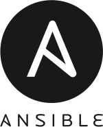
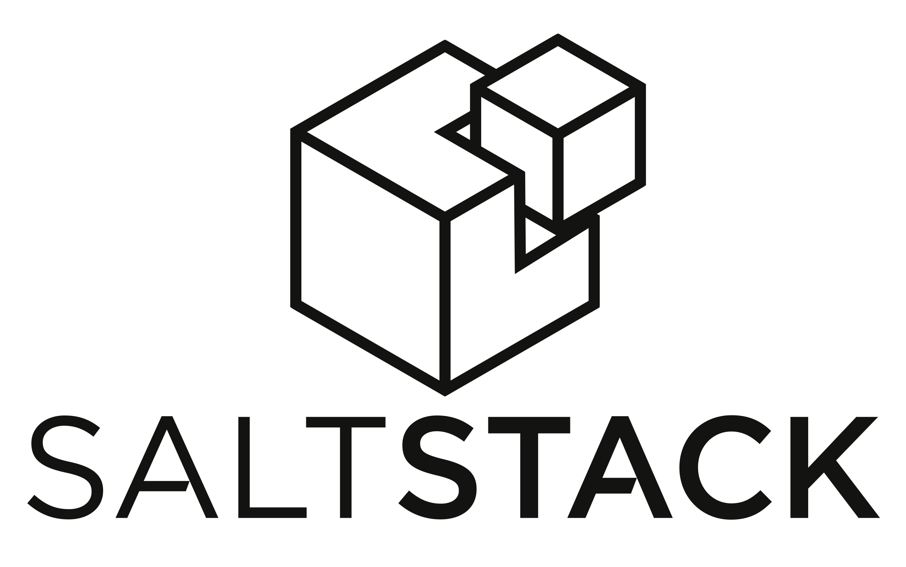
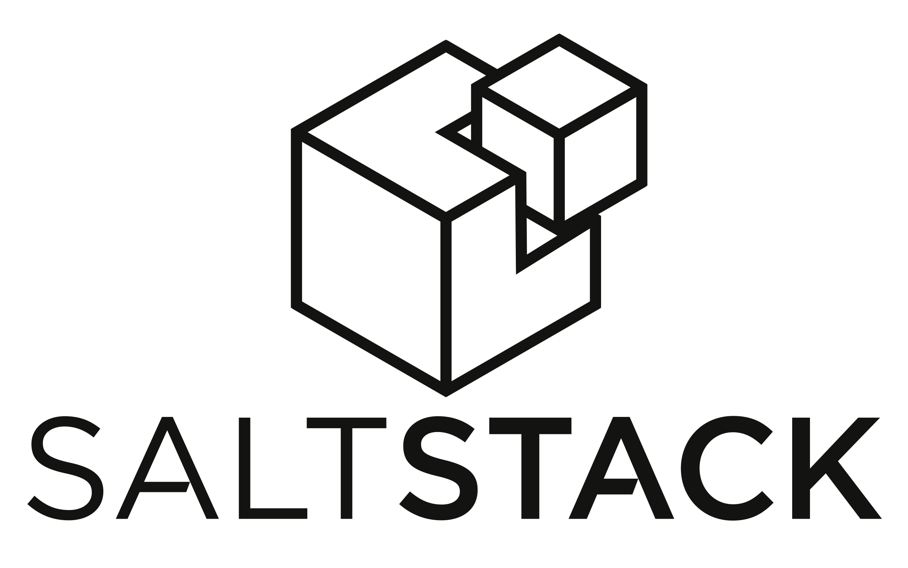
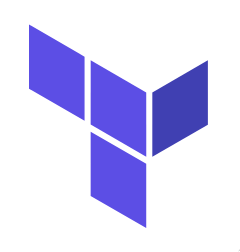
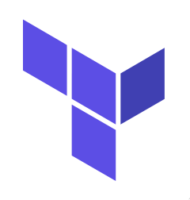
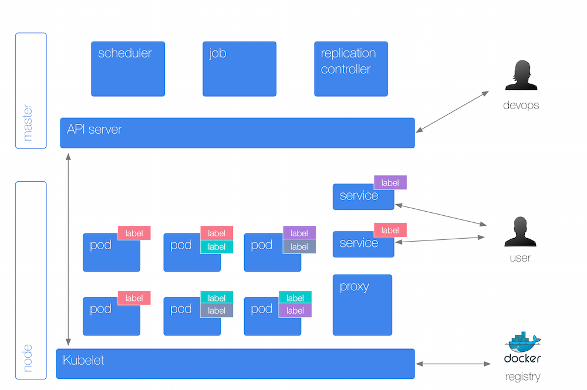
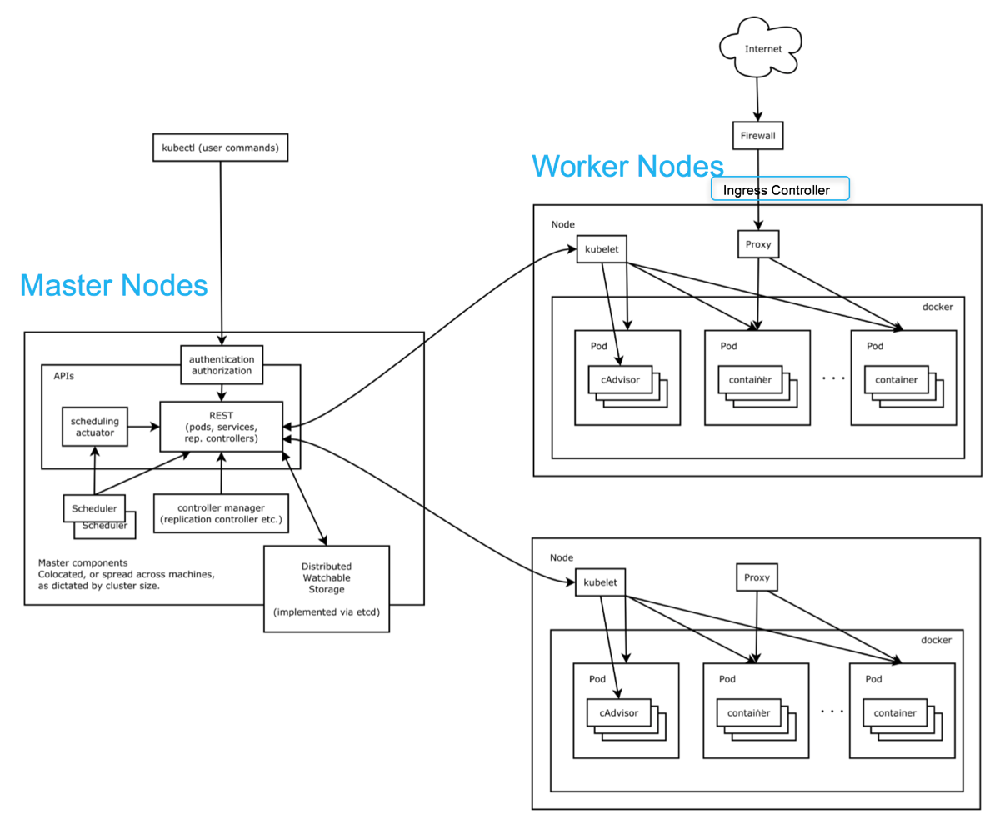

IaC to the rescue
 

 

Infrastructure as Code IaC
Ansible, Chef, Puppet, SaltStack, Fabric, Terraform …
Process of managing and provisioning servers through definition files rather than configuration tools.
Promoted for cloud computing, often confused with Infrastructure as a Service (IaaS)
This brought forth 3 improvements: Cost reduction, faster execution speed, and restricted risk (remove errors and security violations).
Ansible, Chef, Puppet, SaltStack, Fabric, Terraform …
Process of managing and provisioning servers through definition files rather than configuration tools.
Promoted for cloud computing, often confused with Infrastructure as a Service (IaaS)
This brought forth 3 improvements: Cost reduction, faster execution speed, and restricted risk (remove errors and security violations).
Enter the world of containers

Docker is a technology providing containers (or OS-level virtualization).
What exactly is
Kubernetes
It has sets of containers like Docker called Pods

Group of containers that will be co-located on the same host machine and share the same resources and IP address.
A pod can define a volume (local disk directory or network disk)
A pod can define a volume (local disk directory or network disk)
Pods run on Nodes (worker machine)

A node is a worker machine in Kubernetes and may be a VM or physical machine, depending on the cluster.
You might have heard of master/minions before, and nodes were previously called minions. Multiple Pods can run on one Node.
Every Kubernetes Node runs at least:
You might have heard of master/minions before, and nodes were previously called minions. Multiple Pods can run on one Node.
Every Kubernetes Node runs at least:
- Kubelet, a process responsible for communication between the Kubernetes Master and the Node; it manages the Pods and the containers running on a machine.
- A container runtime (like Docker, rkt) responsible for pulling the container image from a registry, unpacking the container, and running the application.
- Containers should only be scheduled together in a single Pod if they are tightly coupled and need to share resources such as disk.
Kubelet
An agent that runs on each node in the cluster. It makes sure that containers* are running and healthy in a pod
* as described in Pod specification files
These Minion nodes are controlled by a Master node, running master components*:
kube-apiserver|etcd|kube-scheduler|kube-controller-manager|cloud-controller-manager
* It's ok to ignore these components, GCP even abstracted them
This set of master components and worker nodes make up the
cluster

Wait, there's more!
You can group pods, no matter on which node they are running, through labels and selectors!
Enter Services and Controllers
Let's summarize what we've learnt
Here's another representation of a cluster